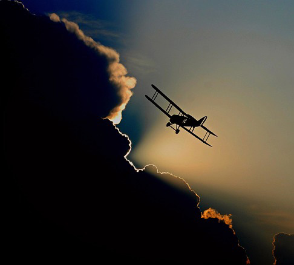

Oh! I have slipped the surly bonds of Earth And danced the skies on laughter-silvered wings; Sunward I've climbed, and joined the tumbling mirth of sun-split clouds, and done a hundred things You have not dreamed of wheeled and soared and swung High in the sunlit silence. Hov'ring there, I've chased the shouting wind along, and flung My eager craft through footless halls of air ....
Up, up the long, delirious, burning blue I've topped the wind-swept heights with easy grace Where never lark nor ever eagle flew And, while with silent lifting mind I've trod The high untrespassed sanctity of space, Put out my hand, and touched the face of God.